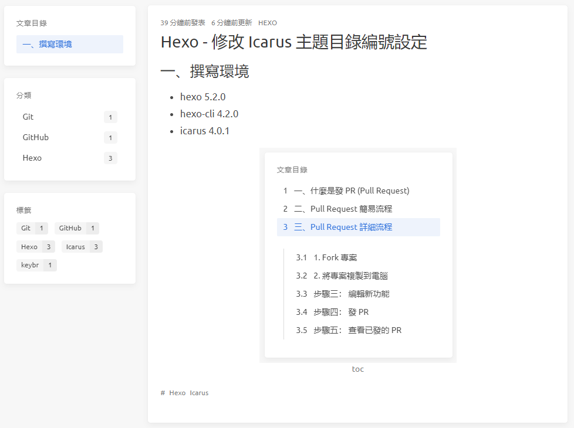

Hexo - Icarus 主題 - 程式碼區塊標題、文字大小與圖片置中對齊
以下是設定程式碼區塊標題，修改 Icarus 主題文章區塊文字大小、圖片置中對齊的方法
一、撰寫環境
- hexo 5.2.0
- hexo-cli 4.2.0
- icarus 4.0.1
二、程式碼區塊標題
不限 Hexo 主題皆適用
使用標籤外掛，加入以下程式碼，可設定程式碼區塊標題：
1 | {% codeblock Array.map %} |
顯示如下：
1 | console.log('hello'); |
三、圖片置中對齊
在 Icarus 主題，圖片並非預設置中，若要設定圖片置中有以下兩種方法：

方法一： 單一圖片置中對齊
不限 Hexo 主題皆適用
若只要一張圖片置中對齊，可在需使用區塊加上以下程式碼
1 | <div style="text-align: center"> |
範例：
(因已在根目錄 _config.yml 設置 post_asset_folder: true，可直接使用同名資料夾中的圖片檔)
1 | <div style="text-align: center"> |
效果如下圖：

方法二：所有圖片置中對齊
若要在 Icarus 主題中，使所有圖片都置中對齊，可在 themes/icarus/include/style/article.styl 添加以下程式碼：
1 | a |
放置位置如下：
1 | article |
效果如下圖：
四、修改文字大小
若要修改 Icarus 主題文章區塊的文字大小，在 themes/icarus/include/style/article.styl 檔案中可看到，Icarus 主題把文章內容 (.content) 的預設字大小設定為 $article-font-size ?= 1.1rem (rem - 子元素透過倍數乘以根元素 px 值)，而 h1~h5、pre，則是利用 em (em - 子元素透過倍數乘以父元素 px 值)，設定文字大小。
1 | $article-font-size ?= 1.1rem |
這裡只修改 $article-font-size 變數，使全部文章區塊的文字變大，你也可以另外再修改 h1~h5、pre 各自的 font-size
1 | $article-font-size ?= 1.2rem |